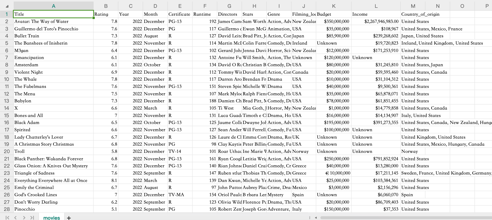
你可以找到某个国家、某个类型、某个年份，但通常要点很多下，脑子里才慢慢拼出整体轮廓。
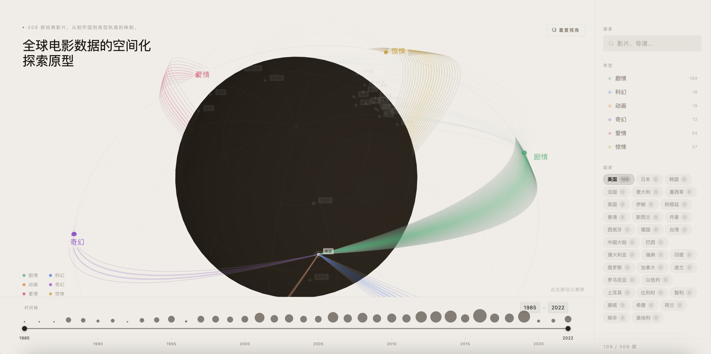
01 学校项目
先让全球电影的来源和流向被整体看见，再让细节被继续追问
这个项目尝试解决的是：当用户想先搞清楚电影主要从哪些国家来，又集中流向哪些类型时，能不能先建立一层全局感觉，再顺着交互继续往下看。
我也把 AI 接进了这次流程里，用它加速发散、搭骨架，把原型更快推成了一个真的能体验的项目。
先定义谁会用它，他们到底想先看清什么。
表格、浏览网站和 2D 图表各有长处，但都很难先端出整张来源和流向图。
把 3D 留给空间入口，把时间和精读交给别的层。
先把骨架、筛选和局部反馈接起来，再谈视觉和演示。
借助 AI 提速，把项目真正推到可体验、可继续迭代的一版。
02 用户
更接近谁
更像探索型用户，不是只想查一部电影的人。
这页更适合探索型用户，比如想看全球电影分布的影迷、做文化观察的学生，或者需要先摸清国家与类型分布的人。对他们来说，第一步通常不是立刻精确比较某一年涨了多少，而是先看清：电影主要从哪里来，不同国家更集中流向哪些类型，这种分布在某个时间切片里大概长什么样。
03 问题
我先回看了几种更常见的数据阅读方式。它们都能回答一部分问题，但一旦问题变成“全球电影整体怎么分布，又怎么随时间变化”，阅读就会很快断掉。

你可以找到某个国家、某个类型、某个年份，但通常要点很多下，脑子里才慢慢拼出整体轮廓。
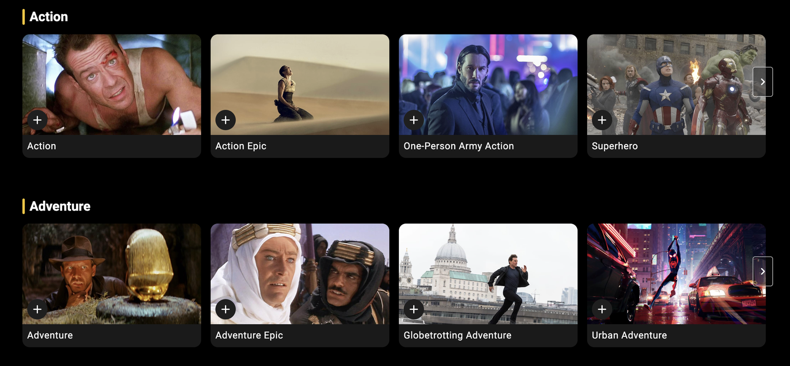
先选国家，再选年份，或者继续按类型往下筛，这种方式适合找一块内容，但很难继续做全局研究。
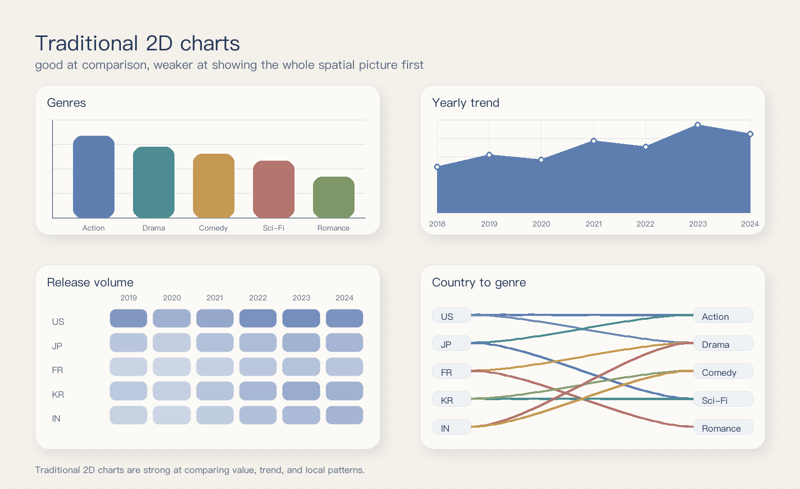
它们很擅长讲趋势、讲大小、讲变化，但很难第一眼把全球分布和时间变化一起端到眼前。
所以这次要重做的，不只是筛选方式，而是最前面的可视化入口。
04 取舍
在设计时，我先看的是这一版最优先解决什么。最后发现，要先解决的，是让用户先看到全球电影的整体分布，并意识到这种分布会随时间变化。因为地理位置本身就是理解入口的一部分，所以我保留了 3D。
2D 依然很重要。它更适合比较趋势、大小和局部差异，所以我把它留给后面的精读层。
05 编码
真正的难点不是 3D 本身，而是不同维度的信息在抢同一个画面。国家、类型、票房、时间，本来就在讲不同的事情。如果一开始把它们全塞进主视图里，用户看到的只会是一团热闹。
所以我先决定每种信息该回到哪个视觉通道。
国家天然带地理属性。先知道它从哪里来，比先读数字更容易建立整体感觉。
类型对应的是去向。挂到外围之后，每条路径最后落到哪里会更清楚。
票房更适合放在第二眼阅读里。先扫出大致分布，再决定要不要继续追数字。
时间最容易把主视图搅乱，所以我把它留给底部切片。先切阶段，再比较变化。
06 原型
这一轮我先不追视觉细节，而是先把界面骨架定下来：中间给 3D 地球，右侧给筛选，上方给搜索，下方给时间轴。先让用户看到整体分布，再顺着不同入口继续往下读。
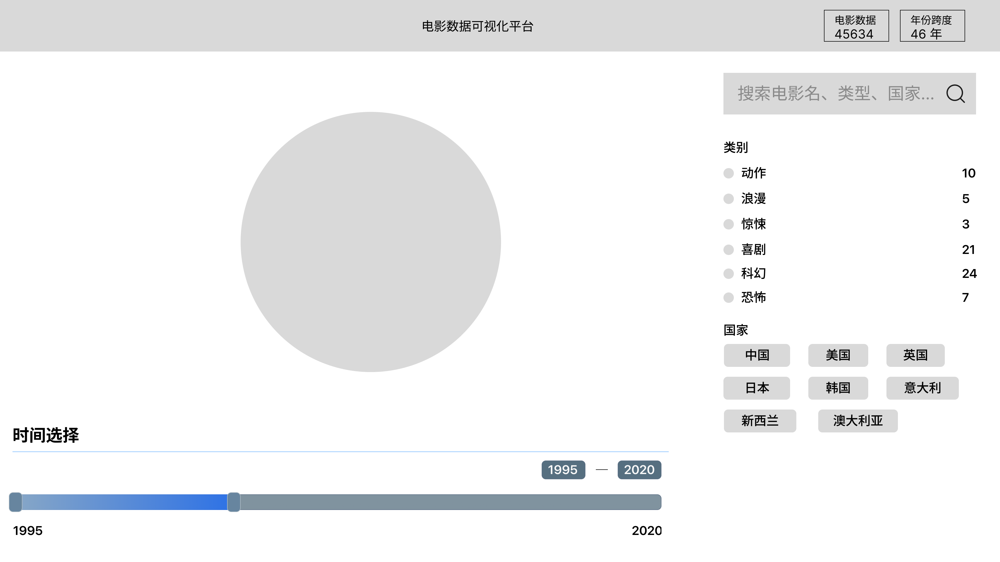
这一步先解决整体感。用户第一眼先看到电影大概从哪里来、往哪里流，而不是一上来就掉进局部条件里。
当用户已经知道自己要找哪个国家、类型或电影名时，直接搜索会比在界面里来回扫更快。
国家和电影类别都属于一组一组可选条件，放在右侧集中处理，会比把它们散在主画面里更容易读。
时间不是一个个离散标签，而是一段连续区间，所以我把它放到底部，用拖拽和输入时间去选择特定阶段。
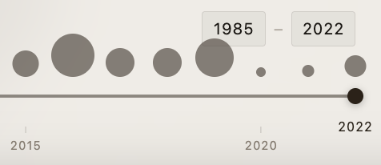
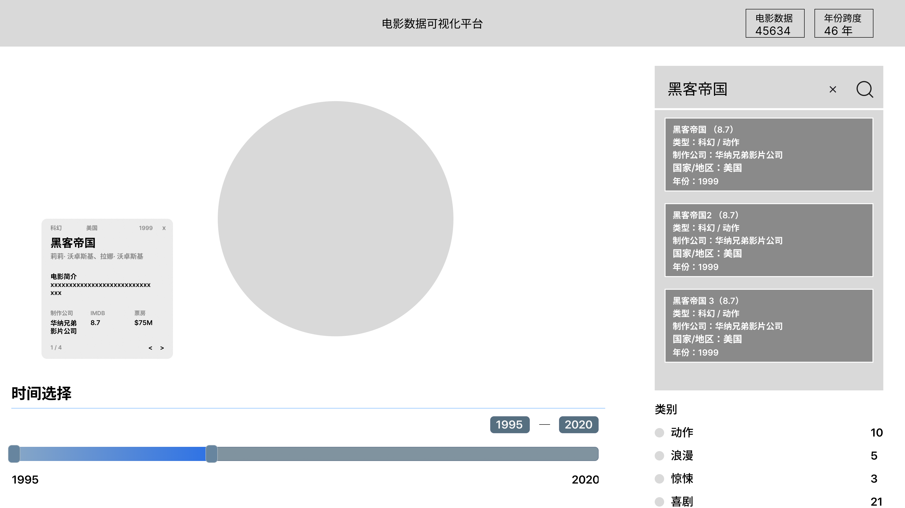
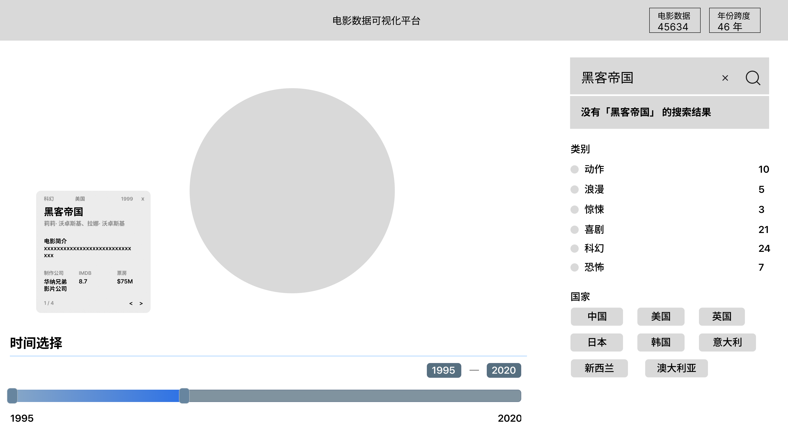
07 AI
先把设计规则写成一份能复用的 md，再让 Figma Make 基于低保真原型把页面接出来，最后继续补筛选、反馈和时间切片这些细节。
我先把页面基调、层级、卡片边界和 Movie 页的关键规则写清楚。这样 AI 接到的不是一句模糊提示，而是一份可执行的约束。
MovieTrack——全球电影数据的空间化探索原型 · 设计规范
一、色彩系统
背景 & 界面基础色
用途 色值 说明
页面背景 #F0EDE7 暖米白
中性文字 #8A7E72 标签、次要信息
静音文字 #B4ADA4 placeholder、弱提示
主文字 #1C1814 标题、正文
深棕文字 #3A342C 地球标签文字
段落文字 #5E5650 详情卡描述文字
电影类型色（6色系）
类型 中文 Hex HSL 语义
Drama 剧情 #2EAA74 154°, 57%, 42% 翡翠绿
Sci-Fi 科幻 #3A7AE4 220°, 73%, 56% 钴蓝
Animation 动画 #E87820 32°, 83%, 52% 暖橙
Fantasy 奇幻 #9040CC 280°, 55%, 52% 紫罗兰
Romance 爱情 #DC4468 345°, 68%, 57% 玫瑰红
Thriller 惊悚 #C8A020 46°, 72%, 46% 金琥珀
6色在色相环上约每60°均匀分布，确保最大视觉区分度。
3D 场景色
元素 Hex 说明
地球本体 #2E2820 深棕黑，哑光质感
经纬网格 #8A7A66 13% 透明度
类型轨道环 #A89A88 22% 透明度
半透明面板色
元素 色值
右侧筛选面板背景 rgba(239, 236, 230, 0.94) + blur(24px)
底部时间轴背景 rgba(239, 236, 230, 0.95) + blur(20px)
电影详情卡背景 rgba(242, 239, 233, 0.98) + blur(28px)
地球标签背景 rgba(240, 237, 231, 0.82)
类型标签背景 rgba(240, 237, 231, 0.88)
二、排版
层级 字号 字重 字距 用途
主标题 26px 400 -0.01em 左上角标题
电影名 19px 400 -0.015em 详情卡电影标题
搜索输入 12px 400 0.01em 搜索框
类型筛选 11px 400 0.01em 筛选项文字
导演、描述 10.5–11px 400 0.01–0.04em 详情卡次要信息
统计数据值 10px 400 0.01em 票房/IMDb 数值
地球标签 8px 400 0.04em 国家名标签
类型环标签 16px 400 0.04em 类型名标签（始终朝向镜头）
区块标题 8px 400 0.22em 全大写 筛选面板区块标题
统计标签 7px 400 0.07em 详情卡数据标签行
三、3D 场景参数
相机 & 轨道控制
参数 值
视角 (FOV) 40°
初始位置 (0, 2, 18)
最小距离 10
最大距离 28
阻尼系数 0.06
自动旋转速度 0.22
自动旋转规则 用户首次操作后永久停止，点击「重置视角」恢复
几何体
元素 参数
地球半径 R = 5
地球球面分段 64×64
类型轨道半径 9.5
轨道倾斜角 22°
经纬网格间距 每30°
国家点半径 0.06（固定，不随数据量缩放）
国家光晕环 Torus，外径 = 点半径 × 2.2，管径 0.012
类型节点球半径 0.10
数据弧线
参数 值 说明
管道分段 60段 曲线平滑度
径向分段 5 截面多边形
最细管径 0.013 票房最低
最粗管径 0.031 票房最高
端点扇出范围 最大 ±0.10 rad（约 ±5.7°） 防止重叠
弧高系数 0.36 → 0.58 按位置渐变
曲线类型 二次贝塞尔（QuadraticBezierCurve3）
四、数据可视化编码规则
弧线视觉权重（票房驱动）
同一国家+类型组内按票房降序排列：
排名 位置 管径 颜色饱和度
第1（最高票房） 组中心 0.031（最粗） 100% 原色
中间 向两侧递减 线性插值 线性插值
最末（最低票房） 组边缘 0.013（最细） 30% 原色饱和度
权重公式：
weight = 1 - |position - center| / center
tube_radius = 0.013 + weight × 0.018
saturation = base_sat × (0.30 + weight × 0.70)
弧线透明度状态
状态 选中弧 可见弧（筛选中） 其余弧
无选中，无筛选 — — 16%
筛选激活 — 24%（悬停 84%） 0.7%
单片选中 96% — 0.7%
悬停 — 84% —
国家地域着色
触发条件 颜色 透明度
选中某部电影 该片的类型色 52%
国家筛选激活 该国主导类型色 44%
默认 — 0%
五、布局
┌──────────────────────────────────┬──────────┐
│ │ │
│ 3D Globe + Overlay │ 筛选面板 │
│ │ 248px │
│ │ │
│ │ │
├──────────────────────────────────┴──────────┤
│ 底部时间轴（1985–2022） │
└──────────────────────────────────────────────┘
区域 尺寸
右侧筛选面板宽 248px
左上标题边距 top 48px, left 48px
底部详情卡边距 bottom 116px, left 48px
时间轴内边距 10px 52px 12px
六、交互规范
操作 响应
悬停弧线 显示 tooltip（电影名 + 年份 + 国家）
点击弧线 选中 → 聚焦该片，显示详情卡
再次点击已选弧 取消选中
Esc 取消选中
←→ 方向键 在筛选结果中切换选中
拖动/滚轮 停止自动旋转（永久，直到重置）
点击「重置视角」 恢复相机位置 + 恢复自动旋转
国家筛选 + 类型筛选 交集逻辑
选中片被筛选排除 自动清除选中状态
非筛选结果弧线 不响应悬停和点击
七、动画
元素 参数
所有透明度过渡 lerp(current, target, 0.07) 每帧
详情卡入场 opacity 0→1, y +12→0, blur 4px→0，400ms ease
详情卡出场 opacity 1→0, y 0→+6, blur 0→2px
标题淡出（选中时） opacity 1→0.38，500ms easeInOut
标签缩放（随镜头） scale = clamp(18/camDist, 0.72, 1.90)低保真已经把主视图、筛选、搜索和时间轴的骨架定好了。接下来我用 Figma Make 去把这版骨架接成页面，再继续调整状态和细节。
这样 AI 真正帮我加速的，是把已经想清楚的结构更快推成可继续修改的页面。
这几组状态图分别说明筛选、悬停、搜索和时间怎么工作。
先压掉无关线条，让视线回到当前问题。
信息在主视图上展开，不用跳出当前画面。
输入对象后，主视图直接定位那条具体路径。
通过年份切片看当前阶段的数据密度。
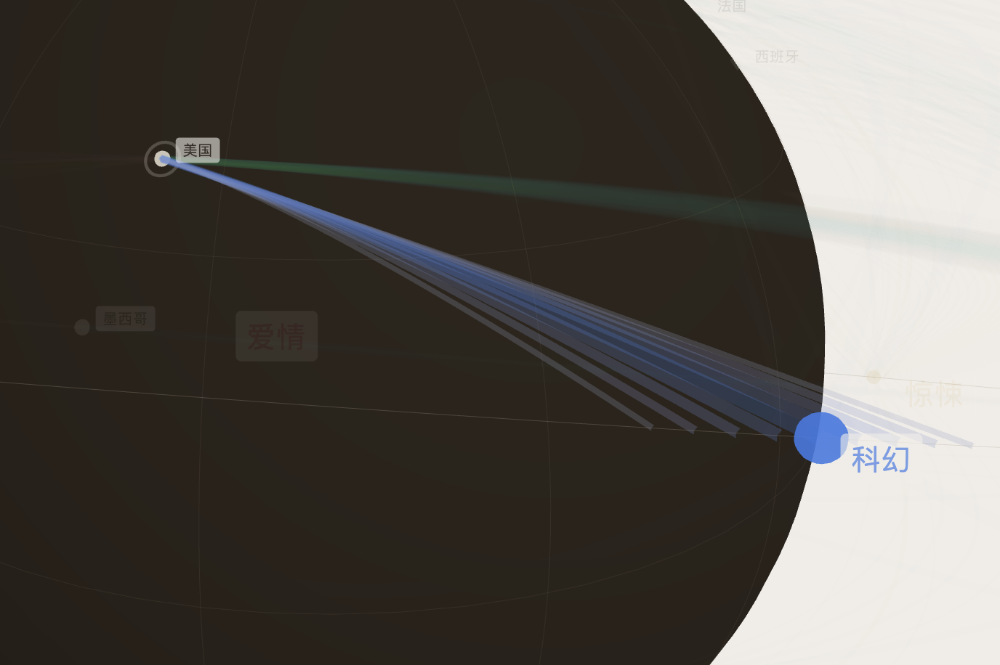
筛选先把无关线条压掉，让用户更快进入当前问题。
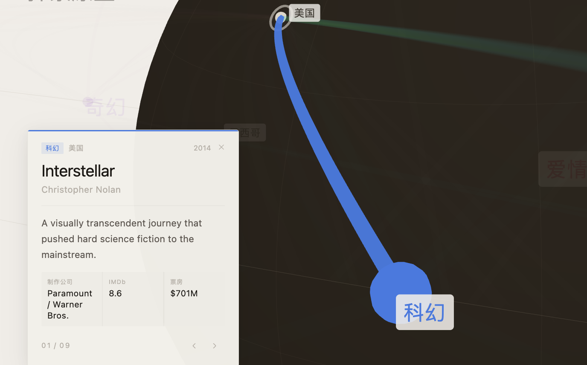
点中具体数据后，只补这一条的信息，不把用户带离主视图。
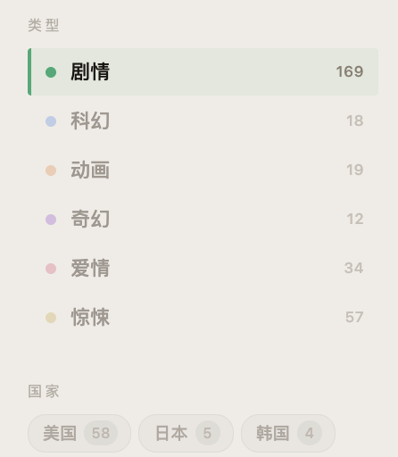
当前筛选有没有结果，会被数量直接回应出来。
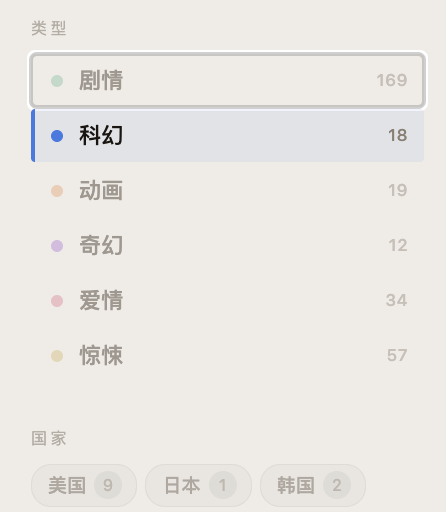
切换筛选后，计数同步变化，方便快速比较不同条件下的类别规模。
时间轴不只负责切年份，也帮助用户先感知这一年的数据密度。
08 结果
我先把低保真和设计规范写清，再用 Figma Make 把页面快速接成可操作原型。这样这版没有停在概念图，而是真正落到可以体验、可以继续改的一层。
AI 帮我更快把骨架接成页面，让时间更多留给信息分层、交互状态和细节判断。
用户可以先看到电影从哪里来、又大概流向哪里，再顺着筛选、搜索和时间切片继续往下看。
这版的分工也留清楚了：3D 先负责整体分布，2D 再负责趋势精读。
这版已经把入口搭起来了，下一步要把“可用”继续推向“更稳、更完整、更适合长期研究”。
让时间变化回到更适合它的表达里，补上长期起伏的整体视角。
继续靠筛选、高亮和分层显示，把高密度时期的噪音压得更清楚。
让用户不只知道“连了什么”，还能继续看为什么会这样。